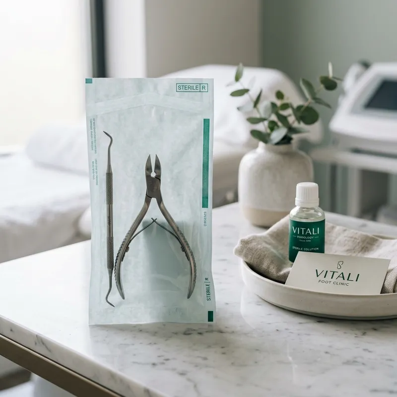

Expertos en la
Salud y Belleza
de tus pies
Atención podológica profesional por Laidy Cordero. Tratamientos especializados para que camines con confianza y sin dolor.
Nuestros Servicios Especializados de Podología
Quiropedia Básica
Limpieza profunda, corte correcto de uñas y remoción de durezas para unos pies saludables.
Uñeros (Onicocriptosis)
Tratamiento especializado y sin dolor para uñas encarnadas, previniendo infecciones.
Estética del Pie
Hidratación profunda, masajes y cuidado estético para que tus pies luzcan perfectos.
¿Por qué confiar la salud de tus pies a Quiropodia LC?
Con años de experiencia en podología y quiropedia, mi misión es devolverle la salud y el bienestar a tus pies. Utilizo técnicas modernas y esterilización de grado médico para tu seguridad.

Lo que dicen nuestros Pacientes
"Excelente servicio, llegué con un dolor terrible por una uña encarnada y salí caminando feliz. Muy profesional y todo impecable."
"La mejor quiropedia que me he hecho. El lugar es súper relajante y el trato es de primera. Mis pies quedaron como nuevos."
"Súper recomendada. Me daba pena mostrar mis pies pero Laidy me dio mucha confianza y el tratamiento fue un éxito total."
¿Ya nos visitaste? ¡Nos encantaría saber tu opinión!
Déjanos una reseña en GooglePreguntas Frecuentes
¿El tratamiento para uñas encarnadas duele?
+Utilizamos técnicas especializadas y, si es necesario, anestesia tópica, para que el procedimiento sea lo más cómodo y menos doloroso posible. La mayoría siente alivio inmediato.
¿Cada cuánto debo hacerme una quiropedia?
+Recomendamos realizar una quiropedia preventiva cada 3 a 4 semanas para mantener la salud de tus pies, evitar durezas y prevenir que las uñas se encarnen.
¿Todo el instrumental está esterilizado?
+Sí, la bioseguridad es nuestra prioridad. Todo nuestro instrumental pasa por un riguroso proceso de limpieza, desinfección y esterilización de grado médico.
Nuestra Ubicación
📍 Calle 132 #91-28
Localidad de Suba, Bogotá